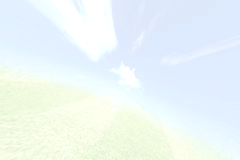
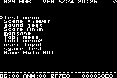

J.League Pro Soccer Club o Tsukurou! Advance (Japan)
SRAM 256K gbakit Built-In Debug Menu Patch 💾 MultiBoot 🎮 4P Link
Cartridge Identity
- Game Code
AC2J(FamilyAC2)- Header Title
SAKATUKUADV- Maker / Revision
8P/ rev0- ROM Size
- 8.0 MiB (8,388,608 B)
- Save Media
SRAM 256K- SHA-256
bede08138e841421608a15011a239d2c896f23bf7a2243d1687075be4cacf743- Engine / SDK Group
comm-002(145 families)
Screenshots

Debug Menu Re-Enablement Patch (.ips)
Download AC2J-debug.ips (17 B IPS / 4 B delta)
- Hook Mechanism
thumb_bl_redirect· Redirect boot initializer call at 0x003aa8 (bl 0x08014acc -> bl 0x080026ec) to launch S29 AGB Developer Test Menu (Test menu / Scene Viewer / sound test / Score Anim / montage / Tobi menu2 / sgame test)- IPS SHA-256
7662f1f7737af538e5608affef4d0b721c9b6ba5bfacb79ee27321dac50d3a60
gbakit patch apply AC2J-debug.ips original.gba patched-debug.gba

Link Cable & Multiplayer Communications
This title contains detected communication capabilities: 💾 MultiBoot 🎮 4P Link.
Detailed protocol specifications, SIO registers, Joybus commands, and MultiBoot sequences are documented in the Link & Multiplayer Reference.
- Multi-Player SIO (4P)
- 16-bit ring network · SIOCNT (
0x04000128) literals:0x0003ac,0x000450,0x000b24· SIODATA32/SIOMULTI0 (0x04000120) literals:0x000520,0x00059c,0x0006e4 - Single-Cart MultiBoot
- Single-Cartridge MultiBoot (Download Play) client/server handler · Thumb SWI 0x25 (
0xDF25):0x0221f6,0x106abe,0x122efa,0x1cc1a2
Battery Save Support in gbakit
Built-in definition (AC2J)
gbakit save verify AC2J save.sav
gbakit save decode AC2J save.sav
gbakit save fix AC2J damaged.sav -o repaired.savROM Assets, Compression & Audio
- BIOS Compression
- LZ77 (
0x10): 2,297 streams · RLE (0x30): 0 streams - ROM Pointer Tables
- 426 tables (0 pointing to validated compressed streams)
- SDK Backup Tags
SRAM_V112
Text, Fonts & Scene Data
- Primary Text Encoding
- LZ77-compressed ASCII (
32ASCII strings ·200Shift-JIS runs ·2LZ77 ASCII blocks) - Font & VWF Indicators
- VWF Width Table 1bpp Font · BIOS SWIs: BitUnPack
0x10:10· LZ770x11/12:21· Huffman0x13:15· RLE0x14/15:16 - Scene & Packaging
102ROM pointer tables (≥32 entries,2≥200) ·5relativeu32TOCs ·176OAM metasprite hits
Hardware MMIO Subsystems
ppu_display0x800399c,0x8004368,0x800b198,0x800b224save_bus_sram_flash0x8002494